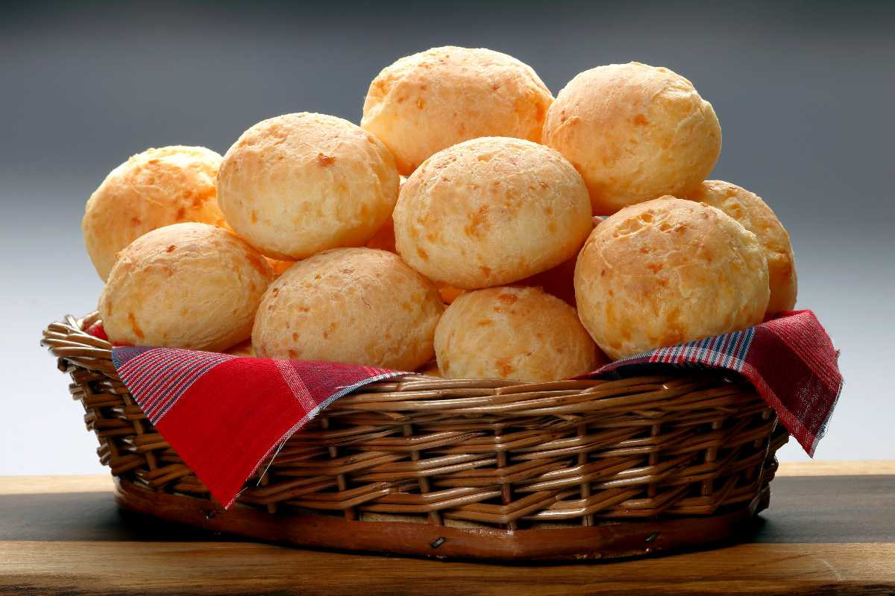

Cheese Balls
Welcome! The today's dish is Cheese Balls, oh GOD from HEAVEN!, blessed is the Cheese Ball's Creator, Thanks

Pick your apron, and prepare your shopping list to the following igredients
- Tapioca Flour 1KG
- Long Streaky Bacon Stripes (150G) and Ham (250g) - OPTIONAL
- 1Kg Grated Edam Cheese(if you are lazy) and 250g Parmesan Cheese (grated your lazy)
- Milk (trim, let's reduce the fat my friend) and Oil (soy or sunflower)
Preparation:
- Boil 500Ml of milk with 50g of Oil
- Add the 800g Tapioca on a bowl add some salt on it, taste it, must be sort of salted
- then add 500g of edam + 150g of Parmesan
- Make balls and bake @170 for 30 minutes
- Enjoy :)